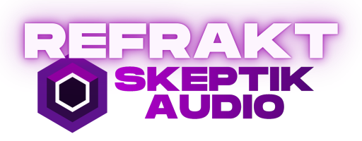

Refrakt spectral panning plugin

Transparent
Basic
About
Settings
Static
Wave
Tilt
Tilt+Wave
safe bass
+ zone
clear nodes
0 hz
S
×
C
Q: 6.00
+6
0
-6
-12
-24
-48
curve
tilt
0.0
shape
0.0
pivot
650 hz
boost
0%
cycles
2
modulation
Sine
CUSTOM
inv
intensity
65%
tilt/wave
50/50
rate
0.30 Hz
Hz
Sync
1/16
1/8
1/4
1/2
1bar
2bar
output
gain
0 dB
mix
100%
phase
-1
+1